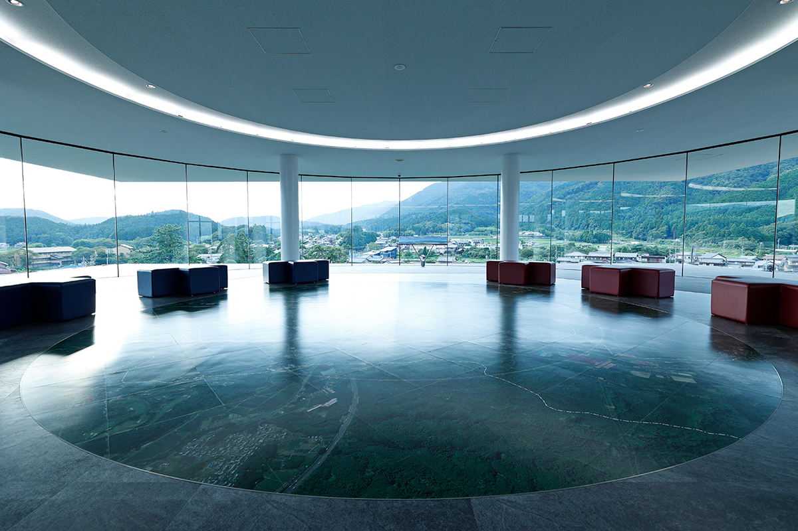
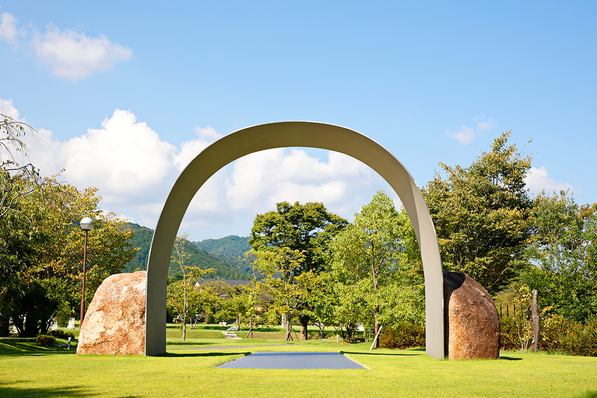
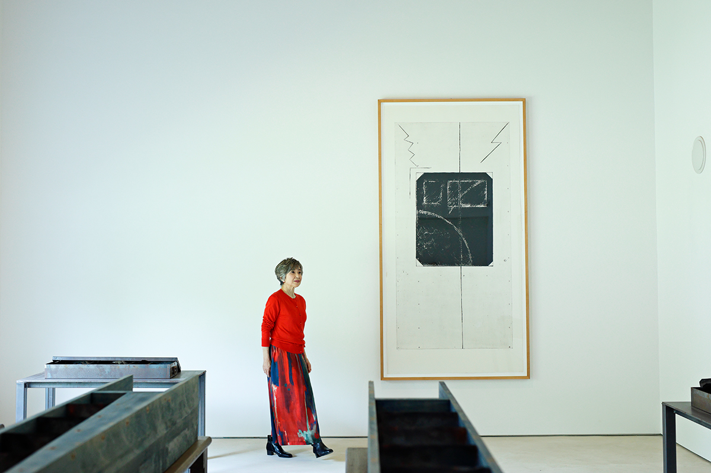
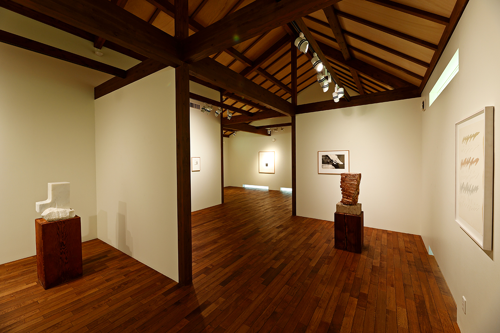
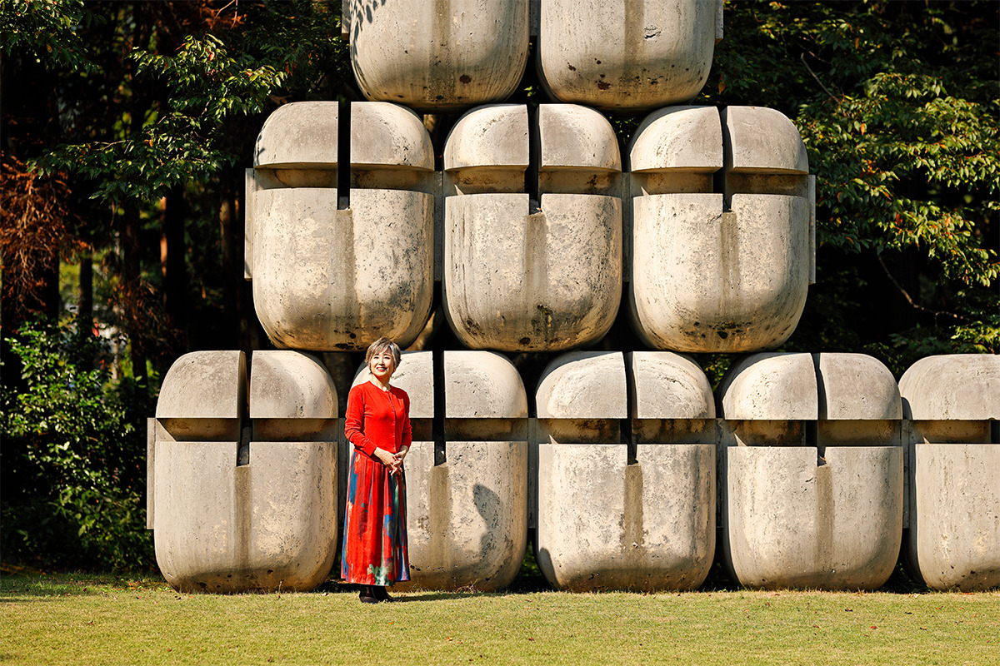
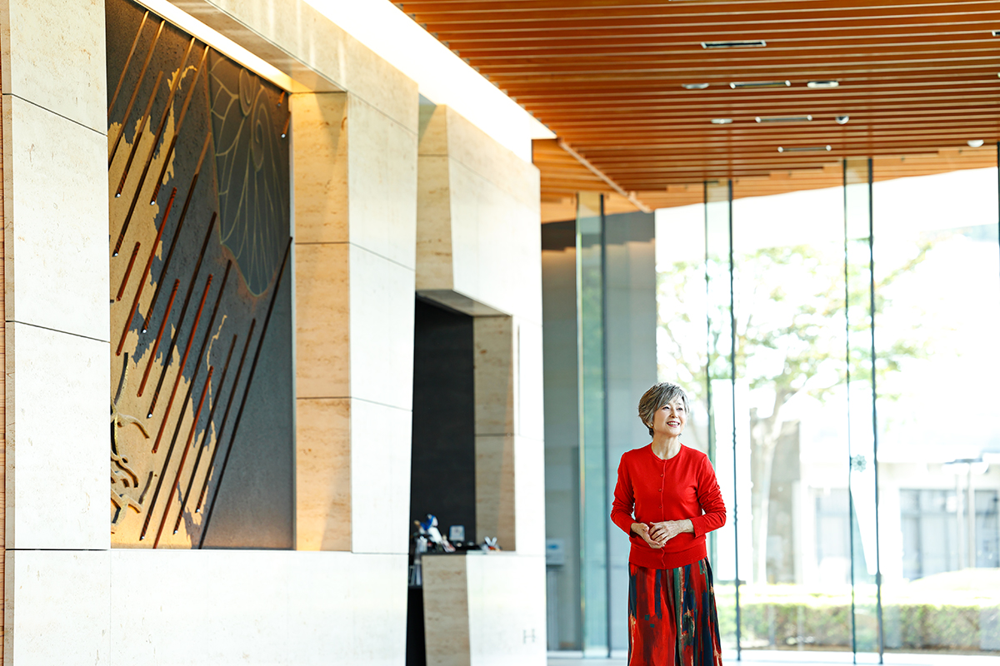
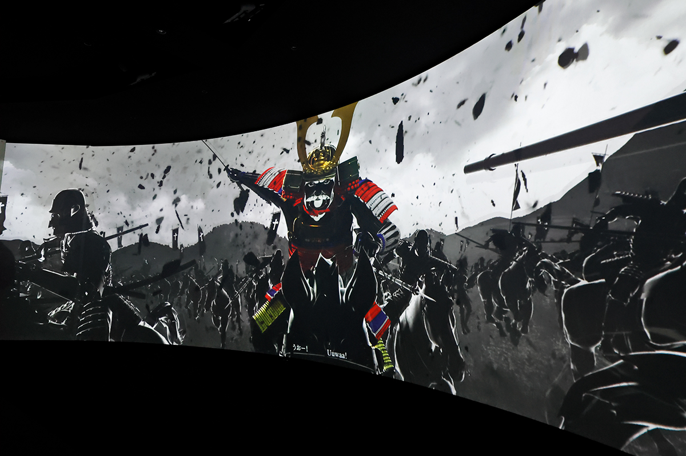
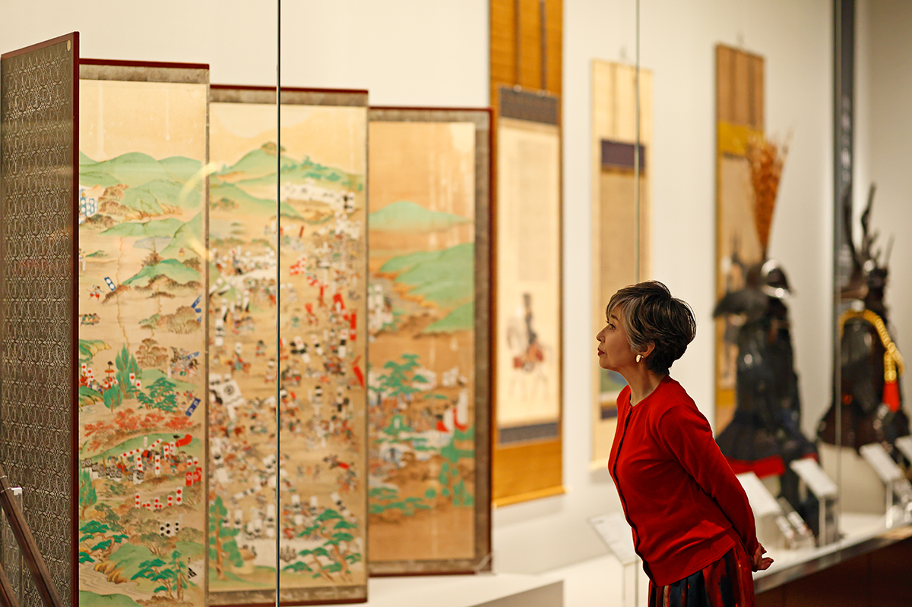
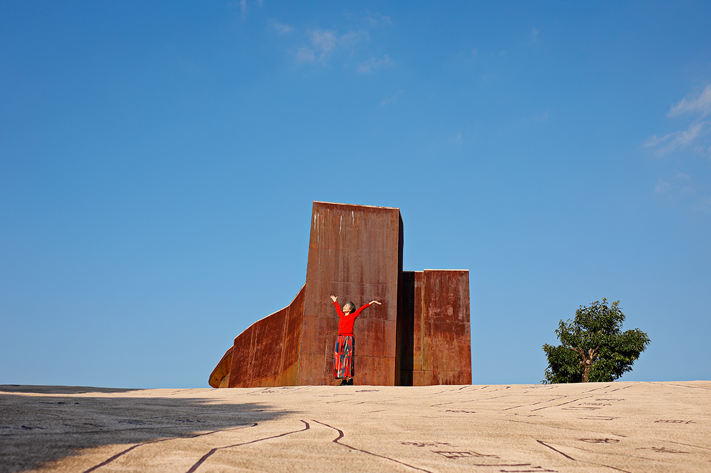
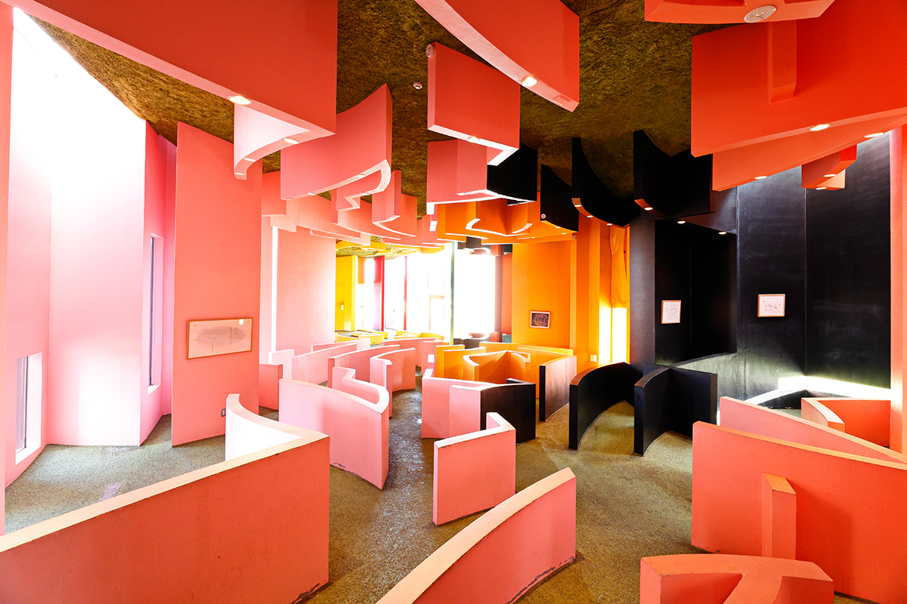

Префектура Гифу · Сэкигахара · история и искусство
Сэкигахара: поле великой битвы, музей с панорамой и современное искусство среди полей

Сэкигахару в Японии знает в Японии каждый: здесь в 1600 году решилось, кто будет править страной. Но городок на западной окраине Гифу когда-то был и перекрёстком культур Востока и Запада, и сегодня сюда стоит ехать не только ради истории, но и ради искусства.
Место
Перекрёсток между горами
Сэкигахара лежит на самом западе префектуры Гифу. С севера её закрывают горы Ибуки, с юга хребет Судзука, а между ними простирается щедрая природа. Когда-то здесь проходила граница, на которой встречались культуры востока и запада страны, и именно здесь в 1600 году сошлись две армии.
Иэясу Токугава (1543–1616) и Мицунари Исида (1560–1600) сражались за власть над всей Японией. Токугава победил, через три года стал сёгуном, и его род правил страной больше двух с половиной веков. Исида, глава западной коалиции, проиграл битву и вскоре был казнён. Японцы называют её битвой, «разделившей Поднебесную».
Сэкигахара известна как одно из главных мест паломничества любителей эпохи воюющих провинций. Но мало кто знает, что вокруг старого поля битвы разбросаны работы художников с мировым именем. Мы прошли по Сэкигахаре, глядя на неё через искусство.
Искусство
«Сэкигахара нингэнмура»: музей без забора
Первая остановка в самом центре бывшего поля битвы. «Сэкигахара нингэнмура сэйкацу бидзюцукан», то есть «Деревня людей» с музеем искусства в повседневной жизни, это огромное арт-пространство, которое создала компания Sekigahara Seisakusho, производитель промышленного оборудования. На территории около 15 гектаров расставлены работы современных художников с мировым именем, есть частные музеи, столовая и кафе. Всего здесь больше ста произведений.

Отправной точкой стала «площадь людей», которую задумал второй президент компании. Он мечтал о месте, где работа и красота совпадают, и хотел открыть его для всех. Так и получилось: дома и огороды местных жителей начинаются прямо за скульптурами, и границы между деревней и музеем нет.
Вход отмечает арка художника Ли Уфана. Дальше раскинулся «Сад Азии», который скульпторы из Индии, Непала и Японии создавали вместе, и «Кура-мюзиам», музей в старом складе, где собраны работы японских скульпторов, среди них Нобуо Сэкинэ. В главном здании музея регулярно меняются выставки.


Символ «Деревни людей» это монумент «Сэкигахара» французского скульптора Пьера Секели. Его поразило, что после битвы в стране наступил мир, который продлился столетиями, и он создал этот памятник как молитву о мире во всём мире.

Работы под открытым небом можно смотреть свободно. Музеи можно осмотреть с гидом по четвергам, пятницам и субботам с 13:00, экскурсию нужно заказывать заранее. Взрослый билет стоил 1500 иен в 2024 году.
«Сэкигахара нингэнмура»
- Адрес
- префектура Гифу, уезд Фува, Сэкигахара, 2067, на территории компании Sekigahara Seisakusho
- Телефон
- +81 584-43-1878 (Sekigahara General Service)
- Часы работы
- четверг, пятница, суббота, с 13:00, только по предварительной записи
- Цены / Вход
- взрослые 1500 иен, старшеклассники и студенты 1000 иен, школьники 500 иен; работы под открытым небом бесплатно
Музей
Битва, в которой можно оказаться
Затем мы отправились в Мемориальный музей поля битвы Сэкигахара. Сюда стоит прийти до того, как отправиться по местам сражения: это интерактивный музей, где о битве рассказывают так, что учиться интересно.

На огромном экране битву показывают сверху, как на карте. В театре кресла качаются, дует ветер, вспыхивает свет и гремит звук, и кажется, что ты сам стоишь в строю. Можно примерить доспехи и сфотографироваться, а ещё можно попробовать блюда, придуманные по мотивам битвы.

В экспозиционном зале выставлены ценные доспехи и старинные документы.

Но главное в музее находится на последнем этаже. Из смотрового зала с окнами во все стороны видно всё поле битвы целиком. Отсюда легко представить, как в этой долине столкнулись около 150 000 воинов, и почувствовать, что мирная жизнь страны началась именно здесь.
Мемориальный музей поля битвы Сэкигахара
- Адрес
- префектура Гифу, уезд Фува, Сэкигахара, Сэкигахара, 894-55
- Телефон
- +81 584-47-6070
- Часы работы
- 9:30–17:00 (вход до 16:30)
- Выходные
- понедельник (если праздник, то следующий день), 29 декабря–3 января
- Цены / Вход
- взрослые 500 иен, старшеклассники и студенты 300 иен; во время временных выставок цена может быть выше
Ёро
Место, где теряешь равновесие
Напоследок мы заехали в городок Ёро к юго-востоку отсюда. Здесь, в парке Ёро, находится «Ёро тэммэй хантэнти», что можно перевести как «место обратимой судьбы». Это парк, который сам является произведением искусства: по нему можно ходить и чувствовать его всем телом. Его придумали художник Сюсаку Аракава (1936–2010) и его партнёр, поэтесса и художница Мадлен Гинс (1941–2014), и замысел они вынашивали больше тридцати лет.

На площади около 18 000 квадратных метров всё устроено так, чтобы сбить с толку чувство равновесия и привычное ощущение расстояния. Пол наклонён, стены не там, где их ждёшь, предметы кажутся то ближе, то дальше. Это странный мир, в котором собственное тело открывается заново.

В Сэкигахаре и Ёро искусство живёт рядом с природой и повседневной жизнью.
«Ёро тэммэй хантэнти»
- Адрес
- префектура Гифу, уезд Ёро, Ёро, Такабаяси, 1298-2
- Телефон
- +81 584-32-0501 (управление парка Ёро)
- Часы работы
- 9:00–17:00 (вход до 16:30)
- Выходные
- вторник (если праздник, то следующий день)
- Цены / Вход
- взрослые 770 иен, старшеклассники 510 иен, школьники 310 иен
- Сайт
- yoro-park.com
Фото: Норихито Судзуки.